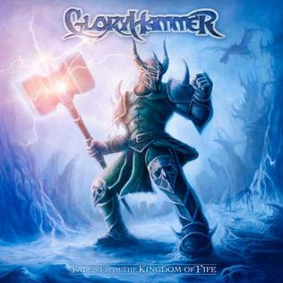
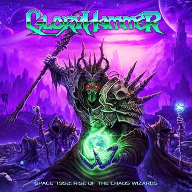

| Tales from the Kingdom of Fife | |
|---|---|
|  |
01. Anstruther's Dark Prophecy 02. The Unicorn Invasion of Dundee 03. Angus McFife 04. Quest for the Hammer of Glory 05. Magic Dragon 06. Silent Tears of Frozen Princess 07. Amulet of Justice 08. Hail to Crail 09. Beneath Cowdenbeath 10. The Epic Rage of Furious Thunder |
| Space 1992: Rise of the Chaos Wizards | |
|---|---|
|  |
01. Infernus Ad Astra
02. Rise of the Chaos Wizards 03. Legend of the Astral Hammer 04. Goblin King of the Darkstorm Galaxy 05. The Hollywood Hootsman 06. Victorious Eagle Warfare 07. Questlords of Inverness, Ride to the Galactic Fortress! 08. Universe on Fire 09. Heroes (of Dundee) 10. Apocalypse 1992 |